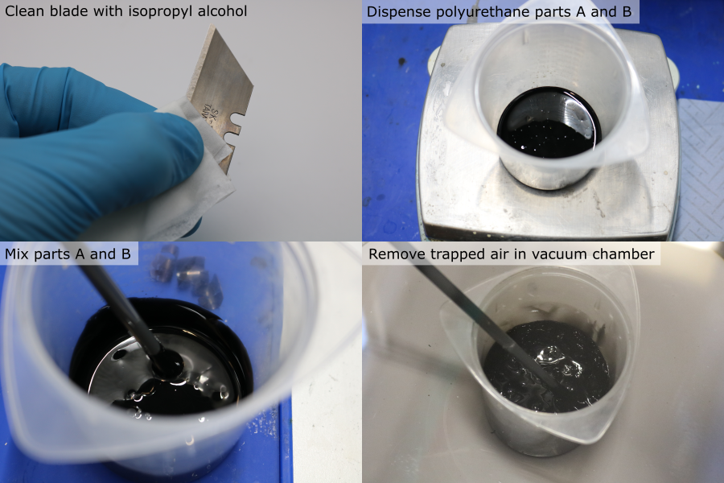
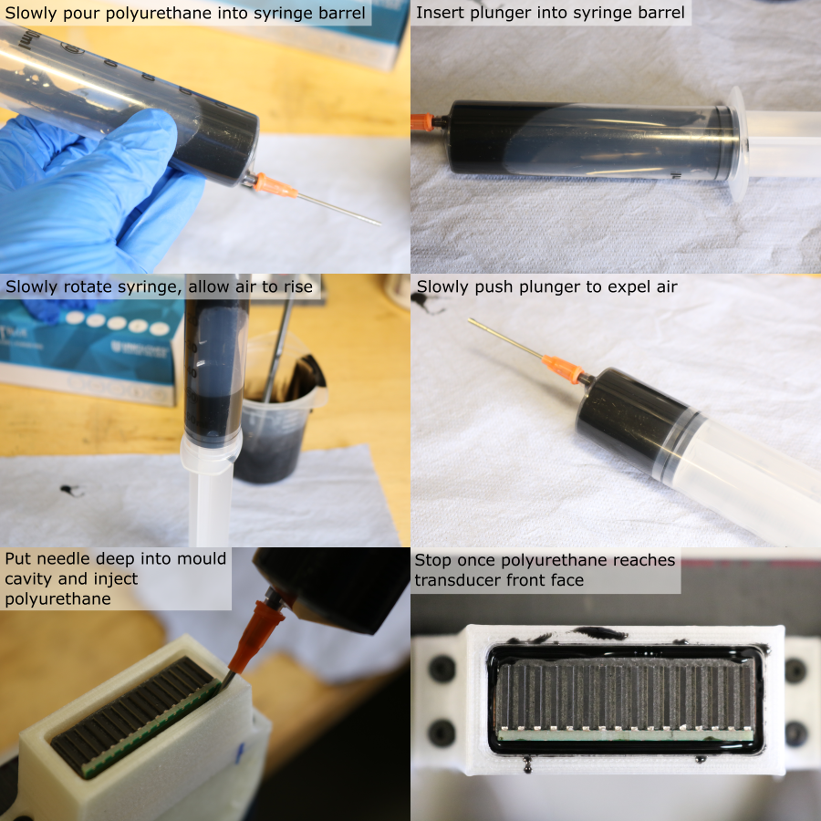
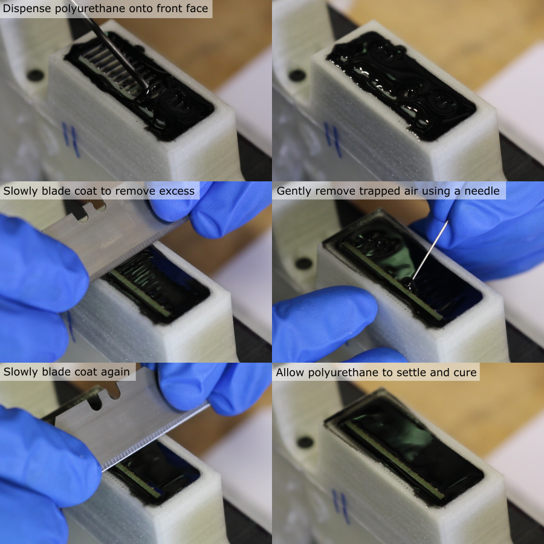

Acoustic Coating
Aptflex F7 Polyurethane Preparation
- Note: The working time of aptflex F7 is 20 minutes. Beyond this its viscosity will increase as the reaction progresses, making it difficult to work with the aptflex F7. Do not attempt to coat more than two modules in one batch (it takes 5-8 minutes to coat each module).
- Note: Use aa fumehood when working with the polyurethane.
- Note: Degreasing was performed previously, do not repeat it as the liquid solvent could dissolve the surrounding PVA mould material and deposit a thin layer of PVA on the transducer front face
- Note: The final vacuum achieved by the pump/chamber must be better than 5 mbar.
Prepare the polyurethane using the following procedure:
- Clean a safety blade and a sewing needle using a paper towel soaked in isopropyl alcohol. Set aside on a clean surface.
- Use an air duster to remove debris from the front face of the transducer module.
- Test the fit of the 15ga blunt needle in the coating cavity.
- If the needle is slightly too large, compress it in a vice until it fits.
- Tightly push the needle luer-slip fitting onto the 60 ml syringe body and remove the plunger.
- Calculate the required mass of part A and part B. For two transducer modules, the required volume is ~40 ml, and the required quantities (with a 6:1 weight ratio) are:
| Component | Mass [g] |
|---|---|
| Part A | 36 |
| Part B | 6 |
- Place a clean mixing pot (minimum capacity 250 ml) on a digital balance (resolution 0.1 g or better), and tare it.
- Dispense the required mass of part A.
- Tare the balance.
- Dispense the required mass of part B.
- Use a plastic rod to mix the components together for 5 minutes. Frequently scrape down the walls and bottom of the pot to make sure that all of the material is fully incorporated.
- Place the mixing pot into a vacuum chamber, seal the lid.
- Turn on the vacuum pump.
- Once the mixture has expanded and collapsed, releasing the trapped air, all the pump to run for 20 more seconds.
- Turn off the pump and release the vacuum.

Polyurethane Casting: Sides
- Remove the pot from the vacuum chamber and bring it into contact with the syringe barrel opening.
- Slowly, pour the mixture into the syringe.
- Holding the syringe horiztonally, push the plunger into the syringe barrel until it forms a seal, but no further.
- Gently rotate the syringe so that it is vertical, with the needle facing up, and allow the mixture to settle and for the air to rise to the top.
- Slowly push the plunger to expell all of the air from the syringe.
- Carefully place the needle into the coating mould cavity, as far down as it will go (it may be necessary to wiggle the needle if the fit is tight).
- Push the syringe plunger to dispense the polyurethane into the mould. Due to its viscosity, this can take 3-5 minutes.
- Once the polyurethane has reached the top of the mould, gently remove the needle from the mould.

Polyurethane Casting: Front Face
- With the needle almost in contact with the PZT elements, dispense a layer of polyurethane onto the transducer front face.
- Use the pre-cleaned safety blade to remove the excess polyurethane. Holding it at a 45° angle, slowly drag it along the surface of the coating mould, at a rate of ~1 mm/s.
- Use the pre-cleaned sewing needle to remove pockets of air trapped between the PZT elements. Gently agitate the polyurethane between the elements so that it fully contacts the backing layer and the PCB.
- Remove excess polyurethane once more using the safety blade.
- Allow the polyurethane to cure for 48 hours.
